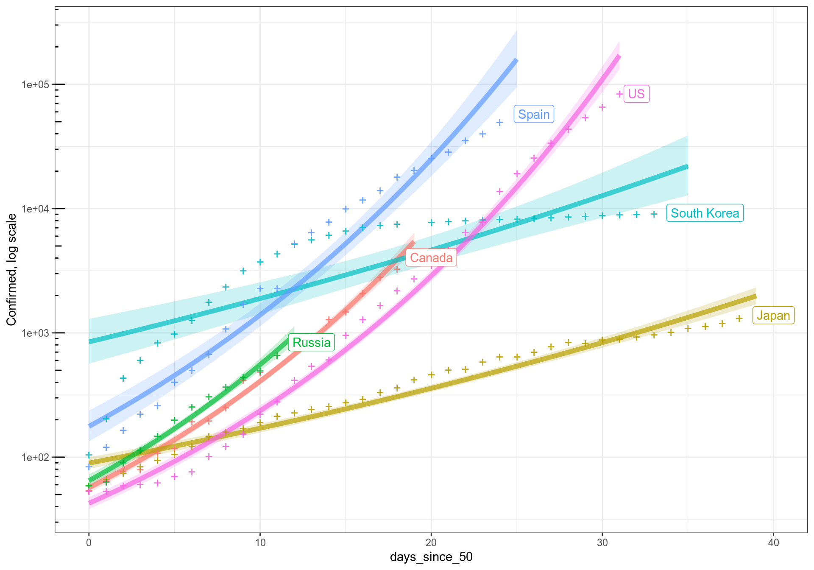
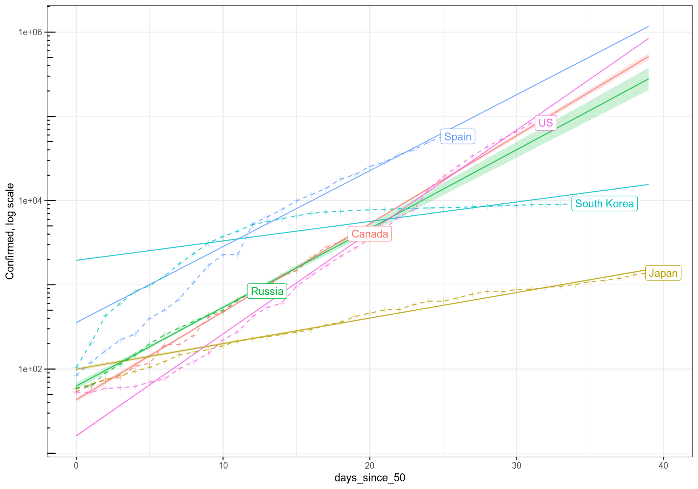

subset<-c('Canada', 'Russia', 'Japan', 'Spain', 'US', 'South Korea')
# summarize within each country
cc<-c %>%filter(country_region %in% subset) %>% mutate(country_region=as.factor(country_region)) %>%
group_by(country_region,date) %>%
summarize(Confirmed=as.integer(sum(Confirmed,na.rm = T)),Deaths=as.integer(sum(Deaths,na.rm = T)))
st<-cc%>%filter(Confirmed>50)%>%group_by(country_region)%>%summarize(start_50=min(date), last=max(date))
cc<-cc%>%filter(Confirmed>50)%>%inner_join(st,by='country_region') %>%
mutate(days_since_50=as.integer(date-start_50))
last<-cc%>%filter(date==last)Looks like geom_smooth doesn’t work very well with poisson family, so using quasipoisson instead
ggplot(cc,aes(x=days_since_50, y=Confirmed, col=country_region))+
geom_ribbon(aes(fill=country_region, col=country_region), stat='smooth',
method='glm', method.args=list(family = 'quasipoisson'), alpha=0.2,size=0)+
geom_line(aes(fill=country_region, col=country_region),stat='smooth',
method='glm', method.args=list(family = 'quasipoisson'), alpha=0.7, size=2)+
geom_point(shape='+',size=4,alpha=0.9)+
geom_label(data=last,aes(label=country_region),nudge_x=1,fill='white',alpha=1.0)+
scale_y_log10()+annotation_logticks(sides='l')+
ylab('Confirmed, log scale')+
theme_bw()+
guides(color="none",fill="none")
family<-poisson(link="log")
ilink=family$linkinv
# here Confirmed cases
model<-glm(Confirmed~days_since_50*country_region,data=cc,family=family)
print(summary(model))##
## Call:
## glm(formula = Confirmed ~ days_since_50 * country_region, family = family,
## data = cc)
##
## Deviance Residuals:
## Min 1Q Median 3Q Max
## -55.533 -4.216 -0.534 3.493 33.872
##
## Coefficients:
## Estimate Std. Error z value
## (Intercept) 3.763136 0.030743 122.407
## days_since_50 0.240698 0.001930 124.728
## country_regionJapan 0.838628 0.037173 22.560
## country_regionRussia 0.375486 0.055653 6.747
## country_regionSouth Korea 3.812872 0.031281 121.890
## country_regionSpain 2.112703 0.031805 66.426
## country_regionUS -0.984293 0.033354 -29.510
## days_since_50:country_regionJapan -0.170883 0.002056 -83.100
## days_since_50:country_regionRussia -0.025350 0.005384 -4.708
## days_since_50:country_regionSouth Korea -0.187526 0.001944 -96.482
## days_since_50:country_regionSpain -0.033117 0.001968 -16.832
## days_since_50:country_regionUS 0.037907 0.001984 19.107
## Pr(>|z|)
## (Intercept) < 2e-16 ***
## days_since_50 < 2e-16 ***
## country_regionJapan < 2e-16 ***
## country_regionRussia 1.51e-11 ***
## country_regionSouth Korea < 2e-16 ***
## country_regionSpain < 2e-16 ***
## country_regionUS < 2e-16 ***
## days_since_50:country_regionJapan < 2e-16 ***
## days_since_50:country_regionRussia 2.50e-06 ***
## days_since_50:country_regionSouth Korea < 2e-16 ***
## days_since_50:country_regionSpain < 2e-16 ***
## days_since_50:country_regionUS < 2e-16 ***
## ---
## Signif. codes: 0 '***' 0.001 '**' 0.01 '*' 0.05 '.' 0.1 ' ' 1
##
## (Dispersion parameter for poisson family taken to be 1)
##
## Null deviance: 2385147 on 165 degrees of freedom
## Residual deviance: 37775 on 154 degrees of freedom
## AIC: 39261
##
## Number of Fisher Scoring iterations: 5# predict how a country will be doing
simul<-expand.grid(days_since_50=seq(0, max(cc$days_since_50)),
country_region=levels(cc$country_region))
pred<-predict(model, newdata=simul, se.fit=T)
# convert prediction and 95% confidence intervals:
simul$pred<-ilink(pred$fit)
simul$pred_lwr<-ilink(pred$fit-2*pred$se.fit)
simul$pred_upr<-ilink(pred$fit+2*pred$se.fit)
# add guide lines# geom_ribbon(alpha=0.2, size=0)+
ggplot(simul, aes(x=days_since_50, y=pred, col=country_region, fill=country_region, ymin=pred_lwr,ymax=pred_upr))+
geom_ribbon(alpha=0.2, size=0)+
geom_line(alpha=0.8, size=0.5)+
geom_point(data=cc,aes(x=days_since_50, y=Confirmed, col=country_region),shape='+',size=4,alpha=0.3,inherit.aes=F)+
geom_line(data=cc,aes(x=days_since_50, y=Confirmed, col=country_region),shape='+',size=0.5,alpha=0.8,lty=2,inherit.aes=F)+
geom_label(data=last,aes(label=country_region,x=days_since_50, y=Confirmed,col=country_region),nudge_x=1,fill='white',alpha=1.0,inherit.aes=F)+
scale_y_log10()+annotation_logticks(sides='l')+
ylab('Confirmed, log scale')+
theme_bw()+
guides(color="none",fill='none')